Version management
Fetches official Mojang release information and manages selected Minecraft Java Edition versions.

A calmer launcher. A cleaner experience.
Vesper Launcher is an independent Windows desktop launcher for Minecraft Java Edition. It is designed around simple version management, isolated game directories, secure Microsoft authentication, and a clean dark interface.
Fetches official Mojang release information and manages selected Minecraft Java Edition versions.
Downloads required files, verifies them and repairs damaged files when necessary.
Keeps Vesper game data separate from the official launcher installation and other instances.
Detects a compatible local Java installation and uses configured memory settings for launch.
Vesper uses Microsoft's public-client device authorization flow. It never asks for, receives, or stores a Microsoft account password.
XboxLive.signin and offline_access.Vesper is currently in development and undergoing Minecraft Game Services application review. The launcher is not a Minecraft replacement and does not redistribute the Minecraft game.
Vesper is an independent project and is not affiliated with, endorsed by, or sponsored by Mojang Studios or Microsoft.